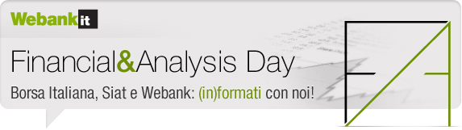

|

|
Gentile NOME COGNOME,
Webank e SIAT, in collaborazione con BorsaItaliana, ti invitano ad un evento esclusivo in compagnia dei massimi esperti del settore. Tanti argomenti in un unico incontro: analisi dei mercati, operatività e strategie di trading e d'investimento, view e previsioni per il 2014.
Non mancare! Vieni a trovarci il 15 aprile 2014 a Milano, presso l'Auditorium BPM in via Massaua 6. |
| INOLTRE, I NOSTRI ESPERTI SONO ANCHE ON AIR! |
|
Andrea Unger - Commodities e trading system |
|
Francesco Caruso - Stock screening, modello di rating quantitativo |
|
G. Di Vittorio - Moderatore della tavola rotonda: mercati finanziari 2014, scenari e prospettive |
|
|
| PRENOTA SUBITO IL TUO POSTO |
Accedi alla tua area privata e clicca sull'immagine Eventi e corsi a destra della tua MyHome.
All'interno di questa sezione potrai consultare l'intero programma dell'evento e iscriverti.
|
Un saluto cordiale.
Il team di Webank
|